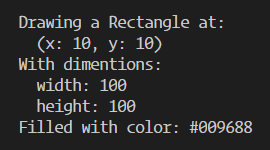

Создать базовый класс Shape, который принимает значения цвета и координат x и y: color, initX, initY.
Создать методы класса Shape:
getColor() - возвращает значение цвета.
setColor(val) - получает и записывает новое значение цвета.
getCoords() - возвращает координаты x и y.
moveTo(newX, newY) - принимает 2 параметра, новые значения для x и y и записывает их.
Создать класс Rectangle который расширяет класс Shape, принимая значения цвета и начальных координат, как его родительский класс, и еще значение ширины и высоты сторон initWidth и initHeight:
Создать методы класса Rectangle:
setWidth(newWidth) и setHeight(newHeight) - получают ширину/высоту и записывают новые значения.
getDims() - метод который возвращает значения width и height.
draw() - метод который имитирует рисование прямоугольника используя методы Shape и Rectangle, выводя в консоль браузера следующей информации.

Создать класс Circle который расширяет класс Shape, принимая значения цвета и начальных координат, как его родительский класс, и еще значение радиуса initRadius:
Создать методы класса Circle:
getRadius() - возвращает текущее значение радиуса.
setRadius(val) - получает значение и присваивает его радиусу.
draw() - метод который имитирует рисование круга используя методы Shape и Circle, выводя в консоль браузера следующей информации.